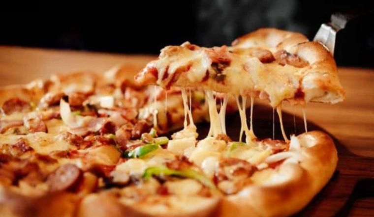

Pizza Recepis

This grilled pizza is topped with tomato sauce, tomatoes, black olives, roasted red peppers, mozzarella cheese, and fresh basil. Of course, you can use whatever toppings you like!
Ingredients
- pizza dough
- garlic oil
- pizza toppings
step
- gather all ingredients
- Make dough: Pour warm water into a large bowl; dissolve yeast and sugar in warm water. Let stand until yeast softens and begins to form a creamy foam, about 5 to 10 minutes.
- Mix in flour, 1 tablespoon olive oil, and salt until dough pulls away from the sides of the bowl.
- Turn onto a lightly floured surface. Knead until smooth, about 8 minutes.
- Place dough in a well-oiled bowl and cover with a damp cloth.
- Set aside to rise until doubled, about 1 hour. Punch down; knead in garlic and basil. Set aside to rise for 1 more hour, or until doubled again.
- Meanwhile, make garlic oil: Combine 1/2 cup olive oil with minced garlic in a microwave-safe cup or bowl. Heat for 30 seconds in the microwave.
- Preheat an outdoor grill for high heat; brush the grate with garlic oil.
- Carefully place one piece of dough on the hot grill. Dough will begin to puff almost immediately. When the bottom crust has lightly browned, turn dough over using two spatulas.
- Top with 1/2 of each of the following: tomato sauce, chopped tomatoes, olives, red peppers, cheese, and basil.